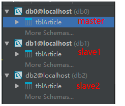
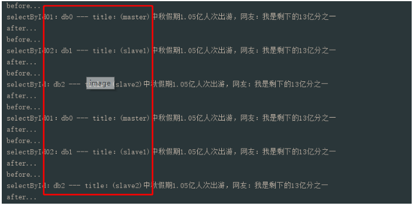

本篇分享数据库主从方案，案例采用springboot+mysql+mybatis演示；要想在代码中做主从选择，通常需要明白什么时候切换数据源，怎么切换数据源，下面以代码示例来做阐述；
由于测试资源优先在本地模拟创建3个数据库，分别是1个master库2个slave库，里面分别都有一个tblArticle表，内容也大致相同(为了演示主从效果，我把从库中表的title列值增加了slave字样)：

再来创建一个db.properties，分别配置3个数据源，格式如下：
1 spring.datasource0.jdbc-url=jdbc:mysql://localhost:3306/db0?useUnicode=true&characterEncoding=utf-8&useSSL=false
2 spring.datasource0.username=root
3 spring.datasource0.password=123456
4 spring.datasource0.driver-class-name=com.mysql.jdbc.Driver
5
6 spring.datasource1.jdbc-url=jdbc:mysql://localhost:3306/db1?useUnicode=true&characterEncoding=utf-8&useSSL=false
7 spring.datasource1.username=root
8 spring.datasource1.password=123456
9 spring.datasource1.driver-class-name=com.mysql.jdbc.Driver
10
11 spring.datasource2.jdbc-url=jdbc:mysql://localhost:3306/db2?useUnicode=true&characterEncoding=utf-8&useSSL=false
12 spring.datasource2.username=root
13 spring.datasource2.password=123456
14 spring.datasource2.driver-class-name=com.mysql.jdbc.Driver同时我们创建具有对应关系的DbType枚举，帮助我们使代码更已读：
1 public class DbEmHelper {
2 public enum DbTypeEm {
3 db0(0, "db0(默认master)", -1),
4 db1(1, "db1", 0),
5 db2(2, "db2", 1);
6
7 /**
8 * 用于筛选从库
9 *
10 * @param slaveNum 从库顺序编号 0开始
11 * @return
12 */
13 public static Optional<DbTypeEm> getDbTypeBySlaveNum(int slaveNum) {
14 return Arrays.stream(DbTypeEm.values()).filter(b -> b.getSlaveNum() == slaveNum).findFirst();
15 }
16
17 DbTypeEm(int code, String des, int slaveNum) {
18 this.code = code;
19 this.des = des;
20 this.slaveNum = slaveNum;
21 }
22
23 private int code;
24 private String des;
25 private int slaveNum;
26
27 //get,set省略
28 }
29 }使用上面3个库连接串信息，配置3个不同的DataSource实例，达到多个DataSource目的；由于在代码中库的实例需要动态选择，因此我们利用AbstractRoutingDataSource来聚合多个数据源；下面是生成多个DataSource代码：
1 @Configuration
2 public class DbConfig {
3
4 @Bean(name = "dbRouting")
5 public DataSource dbRouting() throws IOException {
6 //加载db配置文件
7 InputStream in = this.getClass().getClassLoader().getResourceAsStream("db.properties");
8 Properties pp = new Properties();
9 pp.load(in);
10
11 //创建每个库的datasource
12 Map<Object, Object> targetDataSources = new HashMap<>(DbEmHelper.DbTypeEm.values().length);
13 Arrays.stream(DbEmHelper.DbTypeEm.values()).forEach(dbTypeEm -> {
14 targetDataSources.put(dbTypeEm, getDataSource(pp, dbTypeEm));
15 });
16
17 //设置多数据源
18 DbRouting dbRouting = new DbRouting();
19 dbRouting.setTargetDataSources(targetDataSources);
20 return dbRouting;
21 }
22
23 /**
24 * 创建库的datasource
25 *
26 * @param pp
27 * @param dbTypeEm
28 * @return
29 */
30 private DataSource getDataSource(Properties pp, DbEmHelper.DbTypeEm dbTypeEm) {
31 DataSourceBuilder<?> builder = DataSourceBuilder.create();
32
33 builder.driverClassName(pp.getProperty(JsonUtil.formatMsg("spring.datasource{}.driver-class-name", dbTypeEm.getCode())));
34 builder.url(pp.getProperty(JsonUtil.formatMsg("spring.datasource{}.jdbc-url", dbTypeEm.getCode())));
35 builder.username(pp.getProperty(JsonUtil.formatMsg("spring.datasource{}.username", dbTypeEm.getCode())));
36 builder.password(pp.getProperty(JsonUtil.formatMsg("spring.datasource{}.password", dbTypeEm.getCode())));
37
38 return builder.build();
39 }
40 }能够看到一个DbRouting实例，其是继承了AbstractRoutingDataSource，她里面有个Map变量来存储多个数据源信息：
1 public class DbRouting extends AbstractRoutingDataSource {
2
3 @Override
4 protected Object determineCurrentLookupKey() {
5 return DbContextHolder.getDb().orElse(DbEmHelper.DbTypeEm.db0);
6 }
7 }DbRouting里面主要重写了determineCurrentLookupKey(),通过设置和存储DataSource集合的Map相同的key，以此达到选择不同DataSource的目的，这里使用ThreadLocal获取同一线程存储的key；主要看AbstractRoutingDataSource类中下面代码：
1 protected DataSource determineTargetDataSource() {
2 Assert.notNull(this.resolvedDataSources, "DataSource router not initialized");
3 Object lookupKey = this.determineCurrentLookupKey();
4 DataSource dataSource = (DataSource)this.resolvedDataSources.get(lookupKey);
5 if(dataSource == null && (this.lenientFallback || lookupKey == null)) {
6 dataSource = this.resolvedDefaultDataSource;
7 }
8 if(dataSource == null) {
9 throw new IllegalStateException("Cannot determine target DataSource for lookup key [" + lookupKey + "]");
10 } else {
11 return dataSource;
12 }
13 }本次演示为了便利，这里使用mybatis的注解方式来查询数据库，我们需要给mybatis设置数据源，我们可以从上面的声明DataSource的bean方法获取：
1 @EnableTransactionManagement
2 @Configuration
3 public class MybaitisConfig {
4 @Resource(name = "dbRouting")
5 DataSource dataSource;
6
7 @Bean
8 public SqlSessionFactory sqlSessionFactory() throws Exception {
9 SqlSessionFactoryBean factoryBean = new SqlSessionFactoryBean();
10 factoryBean.setDataSource(dataSource);
11 // factoryBean.setMapperLocations(new PathMatchingResourcePatternResolver().getResources("classpath:*"));
12 return factoryBean.getObject();
13 }
14 }我们使用的mybatis注解方式来查询数据库，所以不需要加载mapper的xml文件，下面注解方式查询sql：
1 @Mapper
2 public interface ArticleMapper {
3 @Select("select * from tblArticle where id = #{id}")
4 Article selectById(int id);
5 }通常操作数据的业务逻辑都放在service层，我们希望service中不同方法使用不同的库；比如：添加、修改、删除、部分查询方法等，使用master主库来操作，而大部分查询操作可以使用slave库来查询；这里通过拦截器+灵活的自定义注解来实现我们的需求：
1 @Documented
2 @Target({ElementType.METHOD})
3 @Retention(RetentionPolicy.RUNTIME)
4 public @interface DbType {
5 boolean isMaster() default true;
6 }注解参数默认选择master库来操作业务(看具体需求吧)
1 @Aspect
2 @Component
3 public class DbInterceptor {
4
5 //全部service层请求都走这里，ThreadLocal才能有DbType值
6 private final String pointcut = "execution(* com.sm.service..*.*(..))";
7
8 @Pointcut(value = pointcut)
9 public void dbType() {
10 }
11
12 @Before("dbType()")
13 void before(JoinPoint joinPoint) {
14 System.out.println("before...");
15
16 MethodSignature methodSignature = (MethodSignature) joinPoint.getSignature();
17 Method method = methodSignature.getMethod();
18 DbType dbType = method.getAnnotation(DbType.class);
19 //设置Db
20 DbContextHolder.setDb(dbType == null ? false : dbType.isMaster());
21 }
22
23 @After("dbType()")
24 void after() {
25 System.out.println("after...");
26
27 DbContextHolder.remove();
28 }
29 }拦截器拦截service层的所有方法，然后获取带有自定义注解DbType的方法的isMaster值，DbContextHolder.setDb()方法判断走master还是slave库，并赋值给ThreadLocal：
1 public class DbContextHolder {
2 private static final ThreadLocal<Optional<DbEmHelper.DbTypeEm>> dbTypeEmThreadLocal = new ThreadLocal<>();
3 private static final AtomicInteger atoCounter = new AtomicInteger(0);
4
5 public static void setDb(DbEmHelper.DbTypeEm dbTypeEm) {
6 dbTypeEmThreadLocal.set(Optional.ofNullable(dbTypeEm));
7 }
8
9 public static Optional<DbEmHelper.DbTypeEm> getDb() {
10 return dbTypeEmThreadLocal.get();
11 }
12
13 public static void remove() {
14 dbTypeEmThreadLocal.remove();
15 }
16
17 /**
18 * 设置主从库
19 *
20 * @param isMaster
21 */
22 public static void setDb(boolean isMaster) {
23 if (isMaster) {
24 //主库
25 setDb(DbEmHelper.DbTypeEm.db0);
26 } else {
27 //从库
28 setSlave();
29 }
30 }
31
32 private static void setSlave() {
33 //累加值达到最大时，重置
34 if (atoCounter.get() >= 100000) {
35 atoCounter.set(0);
36 }
37
38 //排除master，选出当前线程请求要使用的db从库 - 从库算法
39 int slaveNum = atoCounter.getAndIncrement() % (DbEmHelper.DbTypeEm.values().length - 1);
40 Optional<DbEmHelper.DbTypeEm> dbTypeEm = DbEmHelper.DbTypeEm.getDbTypeBySlaveNum(slaveNum);
41 if (dbTypeEm.isPresent()) {
42 setDb(dbTypeEm.get());
43 } else {
44 throw new IllegalArgumentException("从库未匹配");
45 }
46 }
47 }这一步骤很重要，通过拦截器来到达选择master和slave目的，当然也有其他方式的；
上面能选择出master和slave走向了，但是往往slave至少有两个库存在；我们需要知道怎么来选择多个slave库，目前最常用的方式通过计数器取余的方式来选择：
1 private static void setSlave() {
2 //累加值达到最大时，重置
3 if (atoCounter.get() >= 100000) {
4 atoCounter.set(0);
5 }
6
7 //排除master，选出当前线程请求要使用的db从库 - 从库算法
8 int slaveNum = atoCounter.getAndIncrement() % (DbEmHelper.DbTypeEm.values().length - 1);
9 Optional<DbEmHelper.DbTypeEm> dbTypeEm = DbEmHelper.DbTypeEm.getDbTypeBySlaveNum(slaveNum);
10 if (dbTypeEm.isPresent()) {
11 setDb(dbTypeEm.get());
12 } else {
13 throw new IllegalArgumentException("从库未匹配");
14 }
15 }这里根据余数来匹配对应DbType枚举，选出DataSource的Map需要的key，并且赋值到当前线程ThreadLocal中；
1 /**
2 * 用于筛选从库4 * @param slaveNum 从库顺序编号 0开始
5 * @return
6 */
7 public static Optional<DbTypeEm> getDbTypeBySlaveNum(int slaveNum) {
8 return Arrays.stream(DbTypeEm.values()).filter(b -> b.getSlaveNum() == slaveNum).findFirst();
9 }完成上面操作后，我们搭建个测试例子，ArticleService中分别如下3个方法，不同点在于@DbType注解的标记：
1 @Service
2 public class ArticleService {
3
4 @Autowired
5 ArticleMapper articleMapper;
6
7 @DbType
8 public Article selectById01(int id) {
9 Article article = articleMapper.selectById(id);
10 System.out.println(JsonUtil.formatMsg("selectById01：{} --- title：{}", DbContextHolder.getDb().get(), article.getTitle()));
11 return article;
12 }
13
14 @DbType(isMaster = false)
15 public Article selectById02(int id) {
16 Article article = articleMapper.selectById(id);
17 System.out.println(JsonUtil.formatMsg("selectById02：{} --- title：{}", DbContextHolder.getDb().get(), article.getTitle()));
18 return article;
19 }
20
21 public Article selectById(int id) {
22 Article article = articleMapper.selectById(id);
23 System.out.println(JsonUtil.formatMsg("selectById：{} --- title：{}", DbContextHolder.getDb().get(), article.getTitle()));
24 return article;
25 }
26 }在同一个Controller层接口方法中去调用这3个service层方法，按照正常逻辑来讲，不出意外得到的结果是这样：

请求了两次接口，得到结果是：
selectById01方法：标记了@DbType，但默认走isMaster=true，实际走了db0(master)库
selectById02方法：标记了@DbType(isMaster = false)，实际走了db1(slave1)库
selectById方法：没有标记了@DbType，实际走了db2(slave2)库，因为拦截器中没有找到DbType注解，让其走了slave方法；因为selectById02执行过一次slave方法，计数器+1了，因此余数也变了所以定位到了slave2库(如果是基数调用，selectById02和selectById方法来回切换走不同slave库)；